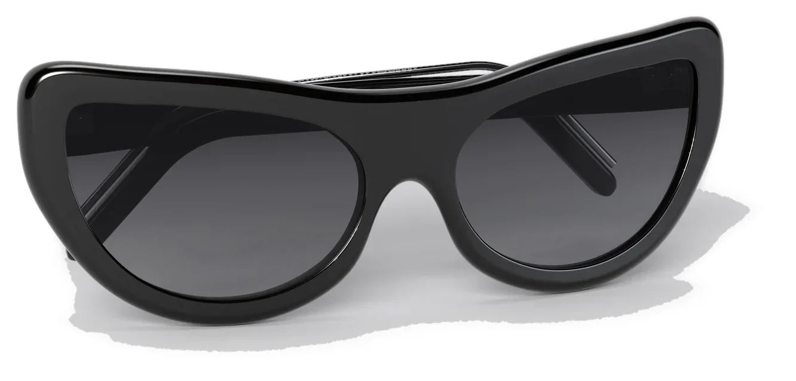
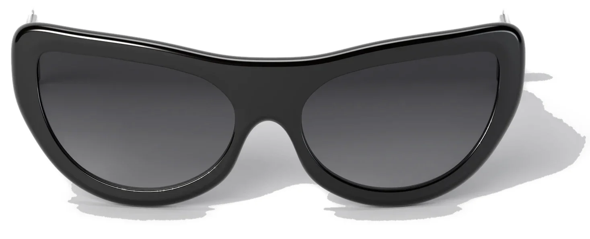
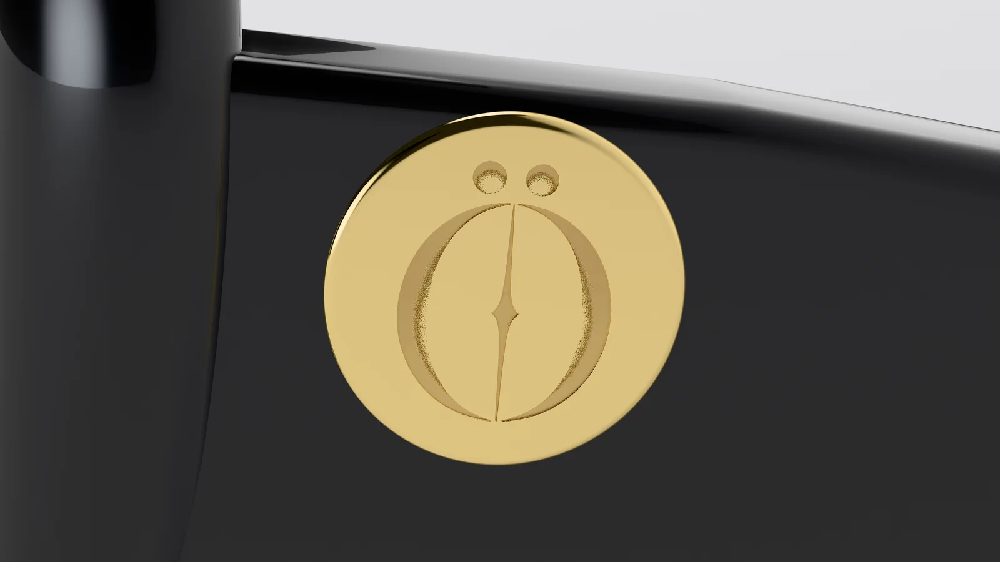
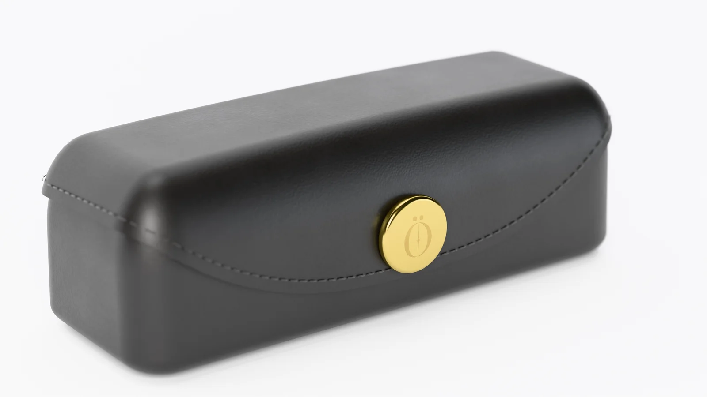
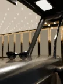

STAND-IN · img/ofusca/front/master.* (departments/apparel/new-pieces-2026-11/build/sunglasses/site/sunglasses_front_16k.png; 16K, 15360 × 8640)
STAND-IN · img/ofusca/flat/master.* (flat view, 8K; 8K, 7680 × 4320)

Chapter I · Accessories
Öfusca
Sunglasses
For the walk from the car to the lobby. Glossy black cat-eyes, gradient lenses, a brass Ö at each temple, and a black leather case for when the lights go down.
- FRAME
- GLOSSY BLACK ACETATE, CAT-EYE
- LENSES
- GRADIENT
- PLATES
- BRASS, THE Ö ENGRAVED
- CASE
- BLACK LEATHER
Price on request
ReserveMade to order. Delivery date confirmed by email.
Delivered in the house box.
Details
- Made to order
- Made to order. We email your delivery date once production is confirmed. Cancel for a full refund any time before production starts.
- Returns
- Exchanges within 14 days of delivery, unused and with tags. Returns
- Care
- Keep them in their case. Clean the lenses with the cloth only, never paper. Fold the left temple first, then the right. Wipe the brass plates with a soft dry cloth. Care
- Size
- The measurements

STAND-IN · img/ofusca/world/master.* (C6: the last frame, the world plate (the car, at night); 8K, 5760 × 7680)Where it is going · C6
The car, at night
The passenger door open, the dome light on.
On the screen in the film, the picture is tomorrow: each piece in the place it is going, with one place kept for someone.
The maker’s notes
Öfusca, the Star in Shades sunglasses
- The front begins as black acetate, about 5 mm thick: 136 mm wide, 49 mm tall.
- It takes two 52 mm lenses across a 16 mm bridge, grey, darker at the top.
- The temples are 130 mm, 11 mm tall at the hinge, on five-barrel steel hinges.
- A round brass plate, 8 mm, sits on the outside of each temple with the mark engraved 5.9 mm tall.
- They close into a black leather case, 164 by 60 by 52 mm, under a 22 mm brass disc.
Inside them: a flat steel core in each temple. Inside the case: cream suede.
Read the poem